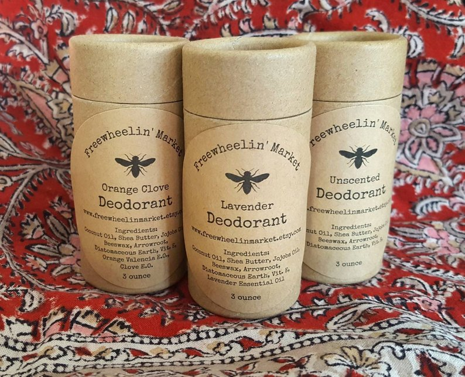
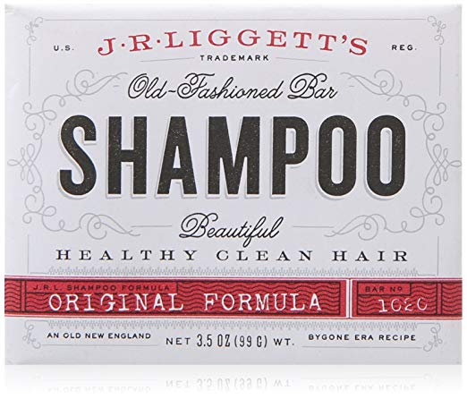
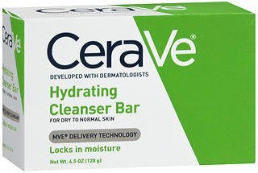
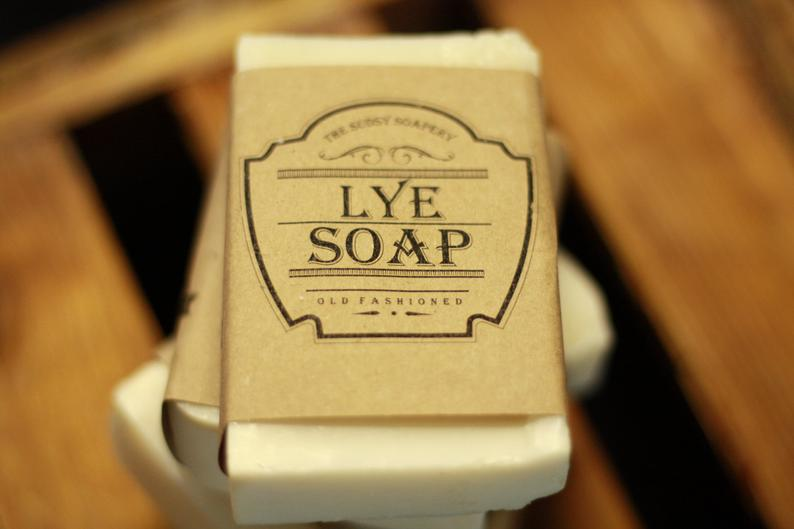
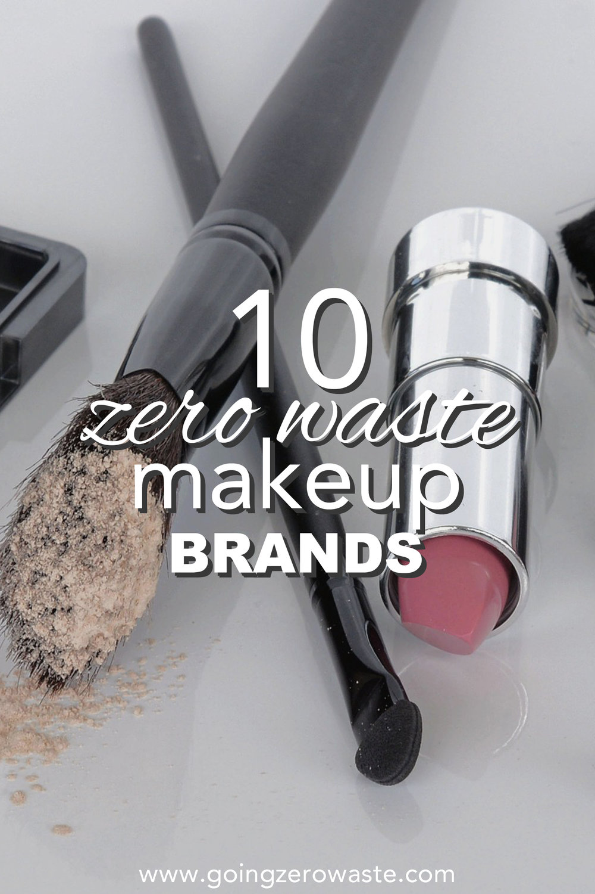
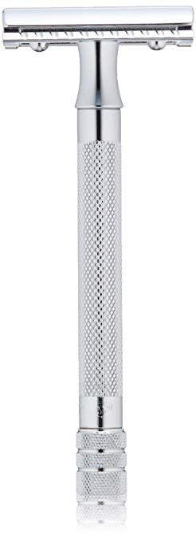

Information for making our bathrooms as waste free as possible.
We will make the switch to 100% compostable (including packaging) bamboo toothbrushes. Brush With Bamboo
Another tip for brushing teeth
is to use a cup to hold water for rinsing, and wet your toothbrush in the water in your cup.
We can make our own in large quantities to store in mason jars. If this is too much work or we don't like the toothpaste, we can also buy some on Etsy.
We can make our own lotion from the tutorial down below. This tutorial seems to take a lot of time, and it might not work on our sensitive skin. We can continue to use our CeraVe lotion, but make sure to buy in bulk and save the containers for other uses.
We can make our own, but this seems to take a lot of work and doesn't work for everybody. Buying on Etsy seems to be the way to go. This one has different essencial oils (or unscented) and comes in compostable packaging. The reiews are great.
We can use bar shampoo. Country sun also has refillable shampoo and conditioner in bulk that I would like to try out.
Right now me and Beck use CeraVe bar soap. It seems to be somewhat expensive, but is very good for our sensitive skin, and it comes in minimal cardboard packaging, which is good. The users of Ivory soap, should look to find a better, less wasteful version that works.
We should use bars for soap, as they have no plastic pumps, containers, and even the refill packs have wasteful packaging. Buying hand soap on Etsy is a good idea. This is an old-fashined bar of soap, so it must work because it worked for people for many many years.
There are many different zero waste makeup companies, and there is a great blog post I found about this. Here it is.
Razors can be very wasteful. There are plenty of alternatives, like safety razors and straight razors.
